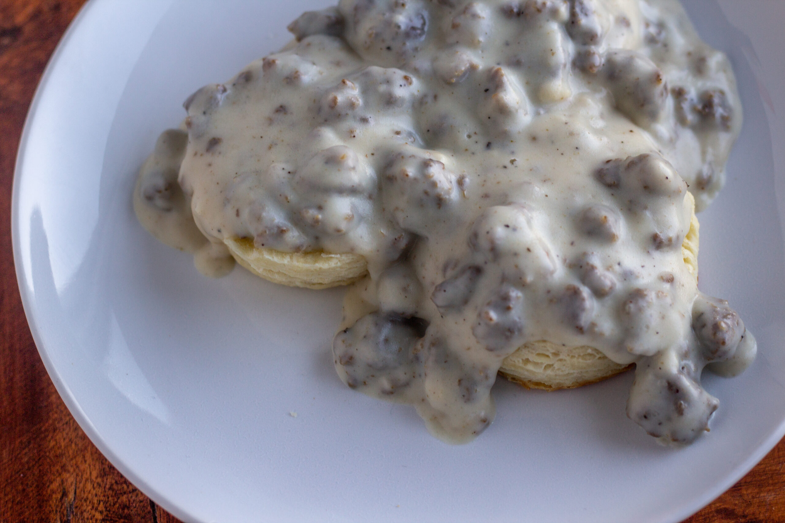

Biscuits and Gravy

Description
One of the best breakfast comfort foods! Sausage gravy and warm flaky biscuits is a family favorite.
Ingredients
- 8 Flakey Buttermilk Biscuits
- 1 pound pork sausage
- 2 Tablespoon + 1 teaspoon(s)s all-purpose flour
- 2 1/2 cups half and half
- 1 Tablespoon butter
- 1/8 teaspoon dried thyme
- 1/8 teaspoon dried crushed rosemary
- 1/8 teaspoon crushed red pepper flakes
- Freshly ground black pepper to taste
Steps
- Brown sausage in a large saucepan. Use a paper towel to blot out most of the grease from the pan.
- Add flour, butter, and half & half. Cook on medium-low, stirring often, for several minutes until thickened.
- Add thyme, rosemary, red pepper flakes and black pepper.
- Serve over warm biscuits.